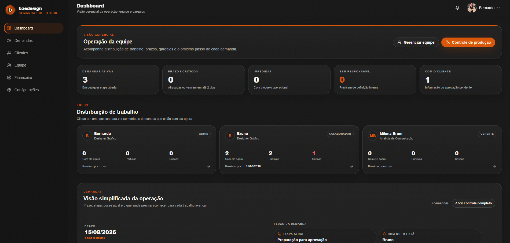

Clareza
O sistema conduz a solicitação para reduzir lacunas antes de a criação começar.
01 — Design HUB
Uma plataforma criada para transformar pedidos dispersos em um fluxo de design mais claro, rastreável e profissional — da primeira solicitação à entrega final.
Visão do Administrador
A visão administrativa reúne equipe, prazos, gargalos, demandas ativas e próximos passos sem alterar a linguagem visual do produto.

INTERFACE REAL Dashboard administrativo do frontend atual.
Modo escuro — tela real do Design HUB, preservando sidebar, métricas, equipe, prioridades e controle de produção.
O problema
Pedidos de design frequentemente chegam por mensagens, e-mails e conversas isoladas. O resultado é um briefing fragmentado, histórico difícil de recuperar e pouca visibilidade sobre quem precisa agir.
O Design HUB nasceu para organizar justamente esse trecho invisível do trabalho criativo: a entrada da demanda, o alinhamento, a produção, a aprovação e o encerramento.
O sistema conduz a solicitação para reduzir lacunas antes de a criação começar.
Histórico, status, responsáveis e decisões permanecem vinculados à própria demanda.
Cliente acompanha o andamento sem depender de atualizações manuais a cada etapa.
Equipe visualiza prioridade, prazo e gargalos antes de decidir o que entra na fila.
Controle de produção
A visão interna foi desenhada para responder rapidamente três perguntas: o que precisa de atenção, onde cada trabalho está e quem precisa agir agora.
A demonstração abaixo reproduz a estrutura e os dados do frontend consolidado. Os filtros funcionam e as demandas podem ser abertas para explorar o fluxo.
3 demanda(s) na fila
CLIQUE EM UMA DEMANDA PARA CONTROLAR O FLUXODEMONSTRAÇÃO INTERATIVA Estrutura baseada diretamente em app.demandas.tsx e no estado de demonstração do produto.
Experimente os filtros e abra uma demanda. A interação mostra como o sistema transforma status, prazo, equipe e próxima ação em informação operacional.
Briefing guiado · Visão do Cliente
No frontend real, a solicitação é dividida em dez etapas e o progresso é mostrado de forma simples: título da etapa, contador e barra de avanço.
A demonstração abaixo segue os mesmos títulos, campos e regras principais de app.nova-solicitacao.tsx. Você pode percorrer o briefing como um cliente faria.
DEMONSTRAÇÃO INTERATIVA Fluxo de cliente reproduzido a partir da estrutura real da nova solicitação.
O objetivo não é criar uma interface paralela para o portfólio: é permitir que o leitor experimente a lógica que já existe no produto.
Arquitetura de acesso
O produto trabalha com quatro papéis internos/externos. Em vez de expor a mesma interface para todos, menus, ações e informações se adaptam à responsabilidade de cada pessoa.
Visão completa da operação, com gestão de demandas, clientes, equipe, financeiro e configurações.
Dashboard · Demandas · Clientes · Equipe · Financeiro · ConfiguraçõesAcompanha a operação criativa, participa de aprovações e acessa os recursos necessários à gestão do fluxo.
Dashboard · Demandas · Clientes · Equipe · Faturamento · ConfiguraçõesTrabalha diretamente nas demandas e acompanha clientes, equipe e responsabilidades ligadas à execução.
Dashboard · Demandas · Clientes · Equipe · ConfiguraçõesSolicita trabalhos, acompanha o andamento e acessa apenas as informações relacionadas à própria empresa.
Dashboard · Nova solicitação · Minha empresa · Meu perfilFluxo operacional
O fluxo diferencia análise, pendência de informação, espera por produção, produção ativa, aprovação do cliente e ajustes. Isso deixa mais claro onde a demanda está e, principalmente, de quem é a próxima ação.
Recusas e cancelamentos continuam registrados como encerramentos alternativos, preservando o histórico do projeto.
Detalhe da demanda
Na fila acima, clique em qualquer demanda para abrir o controle operacional. O modal segue a lógica real do produto: etapa interna, responsável atual, equipe, próxima ação, handoff e controle administrativo ficam no mesmo contexto.
Essa escolha reduz a troca constante de páginas quando o objetivo é apenas entender o estado do trabalho e decidir o próximo passo.
Ecossistema
O Design HUB cresceu além da solicitação: empresas, colaboradores, notificações, permissões, arquivos, financeiro e preferências de aparência passam a orbitar o mesmo fluxo operacional.
Visão por status, prioridade, prazo e responsabilidade.
Fila completa com filtros e controle do fluxo.
Empresas, solicitantes e histórico de projetos relacionados.
Papéis internos, responsáveis, handoffs e permissões.
Liberação de demandas finalizadas, cobranças e comprovantes.
Eventos operacionais, aprovações e atualizações financeiras.
Sistema visual
Preto, creme e laranja formam a base do sistema. Superfícies discretas, cantos amplos e hierarquia tipográfica mantêm o produto alinhado à linguagem visual da marca sem competir com a informação operacional.
O produto possui modo escuro e claro. A troca de tema aparece acima na própria visão administrativa, em vez de ser simulada por componentes inventados dentro do case.
Estado do produto
A versão atual consolida a interface e as principais regras de interação do produto. Rotas, papéis, fluxo de demandas, notificações e regras financeiras já foram auditados e validados no frontend.
A infraestrutura ainda é de demonstração: persistência local e credenciais de teste. A próxima evolução é conectar autenticação, banco de dados e arquivos a um backend preparado para uso real.
O que este projeto representa
O Design HUB é um exercício de produto aplicado a uma dor real da rotina criativa: transformar informação dispersa em um sistema utilizável. É o projeto que melhor sintetiza minha aproximação entre design visual, experiência, operação e tecnologia.
Contato
Projeto, oportunidade profissional ou uma boa troca sobre design — escolha o canal que fizer mais sentido.